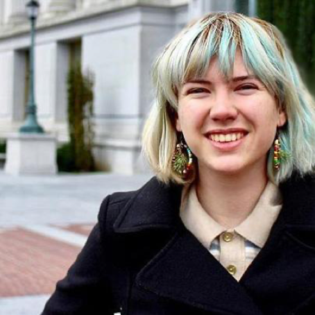
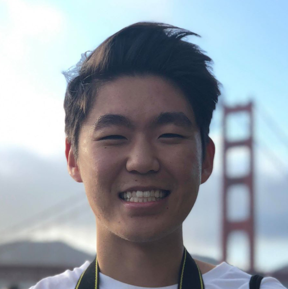
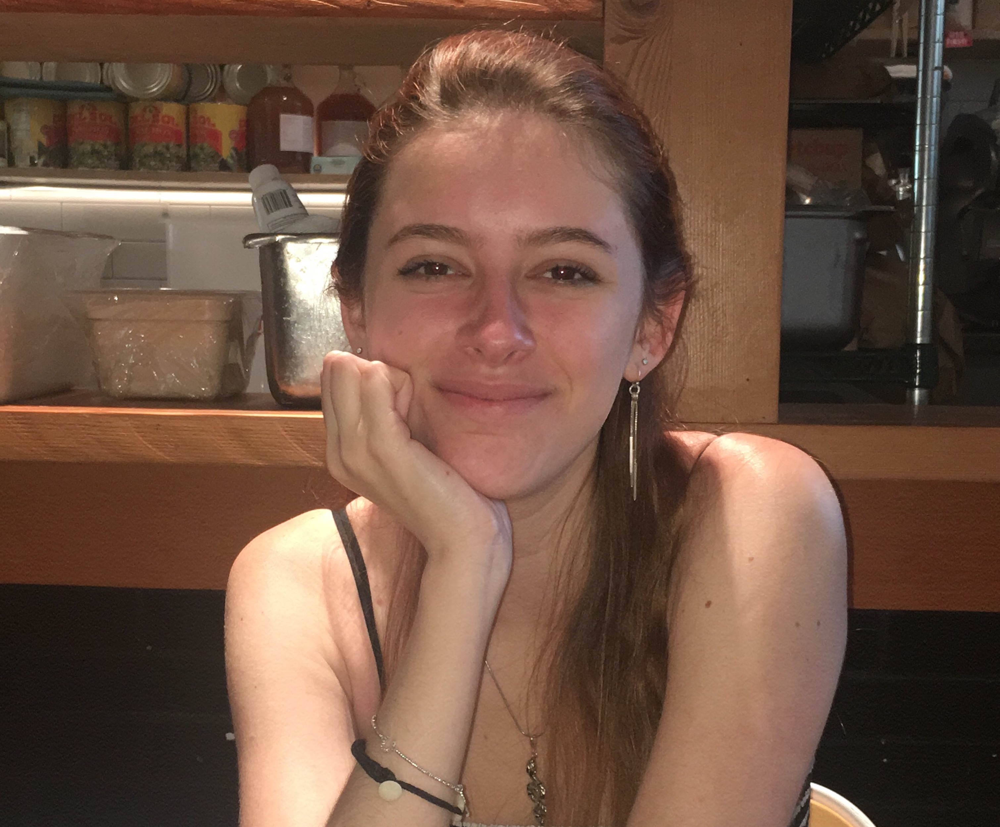

Katy is a fourth-year Integrative Biology Major and Disability Studies Minor from Little Rock, Arkansas. She is a certified EMT in the state of California volunteering with the Berkeley Medical Reserve Corps. Currently, she works at UCSF as a research intern at the Eli and Edythe Broad Center of Regeneration Medicine and Stem Cell Research at UCSF looking at the regulation of hematopoietic sites in Drosophila melanogaster. She adores the outdoors; hiking, camping, and visiting the lake are some of her favorites! And in her free time, Katy loves to try new foods, cycle, learn new songs on the guitar, and explore the Bay Area. In the future, she hopes to attend medical school and complete her ultimate bucket list item of visiting every continent!
Katy Kincannon
Editor in Chief
Caitlin, who has been a member of the Journal since Fall 2017, is a fourth year Legal Studies major with a strong emphasis on Psychology. She currently volunteers at the East Bay Sanctuary Covenant, and she works as the Strategic Relations Manager for a startup. After graduation, she plans on attending law school to help her pursue her long-term goal of becoming a lawyer. When she is not working or in classes, she enjoys working out and spending time with her cat.
Caitlin Arango
Executive Director
Jessica Waller is a third year Legal Studies major from Mercer Island, Washington. She plans to minor in Journalism, having previously been a page editor and worked for a local community college. Currently, she works at Somametrics, a sales and marketing company as a research intern. Outside of UJPB, she enjoys writing music, hiking, and petting random dogs. Currently, she volunteers with the local humane society, fostering dogs and raising funds or supplies. She is still deciding her future path, but plans to attend Law or Graduate school. Her dream travel destination would be to scuba dive at the Great Barrier Reef in Australia and with Whale Sharks.
Jessica Waller
Executive Director
Shruti is a third year Psychology and Public Health major, with a certificate in Design and Innovation. She is currently on the Executive Board of UJPB, an undergraduate instructor for Public Policy 198 and the Head of the campus Wellness Department. In her free time, she loves to dance, write fiction, travel and paint. She is currently working on a personal project - ArMa Necessities.
Shruti Maheshwari
Executive Director
Ajitha is a third year Psychology major at UC Berkeley. She is a research assistant in the Golden Bear Sleep and Mood Research Clinic, and is currently working on her honors thesis. She also works as a nursing assistant with seniors, and enjoys climbing and cooking in her free time!
Ajitha Mallidi
Editor
Anastasia is a second year political science major on a pre-law track. Though she is interested in psychology, she is especially passionate about law and American politics. She has law clerked for the Superior Court in downtown Los Angeles and for the District Attorney’s Office in Van Nuys. She has also interned for Congressman Brad Sherman and worked on Scott Abarams' campaign for Los Angeles City Council. This past summer, she interned for the Los Angeles City Attorney's Office. In her free time, she enjoys reading nonfiction and boxing.
Anastasia Quintana
Editor
AJ is a fourth-year Psychology major from San Diego, CA. She is currently a research assistant at Qing Zhou’s Family and Culture Lab working on the LEAD study which examines the influences of culture, language, and school on the development of preschool-aged children. This past year in Barcelona, she worked with a psychologist detecting early cases of autism-spectrum and learning disorders. Her interests are primarily in clinical psychology with an emphasis in health psychology and hopes to pursue a PHD in the future. AJ loves to travel and plans to go to Asia this summer.
Andrea Johnson
Editor

Aris is a sophomore at UC Berkeley, intending to major in Psychology with a focus on Social Psychology and minor in Philosophy. She is a research assistant at the Mind and Person Perception Lab (MAPP) and the Chatman Lab. Aris hopes to pursue a career in psychology research related to moral and positive psychology. She is also involved in Gia Magazine, Live Poet Society, and the Effective Altruists of Berkeley and spends her free time learning Latin at the gym. Aris hopes you have a wonderful day!
Aris Richardson
Editor
Christopher is a fourth year Psychology major with a special interest in clinical psychology. Currently, she works as a research assistant in Allison Harvey's lab focusing on implementation science, and volunteers in Rachel Loewy's Prodrome Assessment Research and Treatment lab at UCSF studying early interventions for psychosis and schizophrenia. When she isn't in class or in a lab, she paints watercolor and works as a bartender in Oakland.
Christopher Blay
Editor
Delaney Lindsay is a fourth year in the interdisciplinary program with a concentration in gender and science of the mind, and is minoring in disability studies. She is passionate about cognitive and social psychology across cultures, and interested in the variation of stigmas surrounding disabilities and its effects. She is currently the director of an organization that mentors middle school students with learning disabilities. In her free time, Delaney is challenging herself with new athletic practices or enjoying art projects with friends, and relaxing at the beach. In her future, she hopes to get her masters in cognitive psychology and move close to the ocean.
Delaney Lindsey
Editor
Emme is a graduating senior majoring in Integrative Biology. She is interested in medicine as well as the socio-behavioral aspects of psychology. In her free time, she enjoys going to the beach and playing with her dogs. Emme plans on attending medical school in the future.
Emme Morin
Editor

Eric is a fourth-year Psychology major. He currently works in Matthew Walker's sleep lab. He also volunteers as an EMT for Rockmed, providing emergency medical care for venues around the Bay Area. During his spare time, he forces his friends to play board games and binges the Office on Netflix. After graduating, Eric hopes to attend medical school and pursue a career in psychiatry.
Eric Matsunaga
Editor
Hana Day is a second year, intending to double major in Psychology and Media Studies with a Japanese minor. She is mainly interested in industrial-organizational psychology, as well as cognitive psychology and its role in language acquisition of bilingual children. As of now, Hana can be found working at the East Asian Library’s Japanese collection and roaming around the botanical gardens on her days off. In the future, she hopes to join the Peace Corps and work as a community health/youth development volunteer.
Hana Day
Editor
Jenny is a first-year Comparative Literature and Political Science double major from Torrance, CA. She is interested in how psychology intersects with various facets of identity such as gender, race, and disability, specifically in regards to studies of mental illnesses. Additionally, her interests in media have led her to develop a curiosity for how the portrayals of certain mental illnesses are structured in film and television and whether there is a connection/disparity to individuals with mental illnesses in actual society. Jenny also hopes to study how these perceptions vary and possibly even interconnected at the local, national, and global levels, an interest that stems from her love of travel and culture. As a proud Korean-American, Jenny hopes to utilize languages (she is currently studying Korean, French, and Spanish at UC Berkeley) to bridge cultural gaps and foster dialogues that appreciate rather than condemn diversity. Outside of UJPB, Jenny is an editor at the Berkeley Undergraduate Journal, an operations committee member at BARE Magazine and an on-campus advocacy committee member at Confi at Cal. In her free time, Jenny loves spending time with her friends, exploring restaurants in Berkeley, and volunteering at Berkeley Humane, a local animal shelter.
Jenny Lee
Editor
Jane is a second-year intended Psychology major. She is particularly interested in language and memory and hopes to participate in research regarding these topics in the future. In her spare time, she enjoys exploring the Bay Area, watching the sunset, watching live performances, and taking photos.
Jieun Choi
Editor
Julianna is a fourth year Psychology major and Disability Studies minor from Davis, California. She currently works as a Registered Behavior Technician for kids with Autism and absolutely loves her job! For the past year, Julianna has volunteered as a crisis counselor for Crisis Text Line. She wants to spread empathy around the world and decrease the stigma around mental health and other disabilities. In her free time she enjoys yoga, binge watching the office and Gossip Girl, and going on day trips with friends! After college she plans to take a gap year to travel and work before attending grad school for Occupational Therapy.
Julianna Qvistgaard
Editor
Kimia is a graduating Interdisciplinary Studies major focusing on Psychology, Legal Studies, and Sociology. She plans to pursue a PhD in Social Psychology to conduct intervention research on intergroup relations, implicit bias, and punitive attitudes, particularly within the criminal justice system and K-12. As President of Psi Chi and Migrant Advocacy Project, Kimia spends most of her time connecting other students with academic and professional resources on and off campus. She is currently working on writing her thesis regarding an intervention she designed in collaboration with Dr. Jason Okonofua to encourage a race-sensitive mindset in probation and parole. Kimia is rarely seen without a cup of iced black coffee, which she loves only as much as her cats and documentaries.
Kimia Saadatian
Editor
Kirpa is a third year Integrative Biology major and an aspiring psychiatrist. This past summer, she volunteered at the Maryland Psychiatric Research Center, where she worked on research relating to the longitudinal course of delusions in patients with schizophrenia. She is currently a research assistant at UC Berkeley’s Museum of Vertebrate Zoology. In her free time, Kirpa enjoys spending time in nature, playing the piano, and taking photos.
Kirpa Singh
Editor
Maria is a fourth-year psychology major and pre-med student. She currently works as a research assistant at the UC Berkeley Emotion and Social Interaction lab where she helps investigate the relationship between schizophrenia and emotion regulation and memory. Her ultimate goal is to become a psychiatrist, reduce the stigma around mental health, and emphasize the importance of a global perspective in considering mental illness. Outside of her psychology-related interests, she loves Netflix, cats, and running.
Maria Stanica
Editor
Merusha is from Texas and is a third year psychology major at Cal. She is currently a senior RA in Dana Carney’s Micro Lab at the Haas School of Business. Her team works on examining nonverbal behavior in the context of first impressions, group affiliation, and deception. Merusha wants to pursue abnormal/criminal psychopathology in graduate school. She would like to work with America's massive incarcerated population through research and cognitive behavioral therapy. Merusha enjoys constantly having a frivolous espresso beverage in hand and perusing Trader Joe’s for their hottest new frozen food. From time to time, she nurses her Netflix and Hulu addictions.
Merusha Mukherjee
Editor
Michelle is currently a 4th year Integrative Biology major with a Global Public Health minor. She is a researcher at UCSF for immunology therapies of cancer patients and worked with a biotech company on improving groundbreaking pharmaceutical blood thinners this past spring. Michelle has spent time in the Dominican Republic and Panama utilizing her fluency in Spanish to take vitals & prescribe medications in impoverished communities. She studied abroad in Costa Rica researching and conducting experiments on various coral establishments along the coast and is currently working on publishing her own paper.
Michelle Temby
EditorPending.
Nicole Anderson
EditorSage is a sophomore at UC Berkeley who intends to double major in psychology and philosophy. He works as a lead research assistant at the Idiographic Dynamics Lab. There, he currently focuses on analyzing physiological data to establish a link between patterns of autonomic arousal and clinical diagnoses. He intends to pursue a career in clinical psychology with the aim of providing assistance and support to those who struggle with mental illness. In his free time he enjoys playing games of all kinds, having good conversations, reading philosophy, exploring the outdoors, trying exotic foods, and traveling.
Sage Jakobs-White
Editor
Suchitra is from Northern Virginia and is a first-year intending to major in MCB--with a focus on Neurobiology--and minor in Disability Studies. Her research interests include objective diagnostic tools for depressive disorders in adolescents, as well as VR-based therapy systems. Currently, she works at the ASUC on mental health research and policy, and is combining efforts with UC Berkeley’s CAPS to increase mental health accessibility and implement a peer-counseling program. Suchitra plans to pursue a PhD in Brain Science and is excited to work with all the researchers this year! In her free time, she enjoys hiking up berekley’s fire trails, treating herself to Peet’s Coffee, and ballroom dancing.
Suchitra Sudarshan
Editor
Tavisha Thapar is a second year studying Psychology and Statistics. She’s from San Diego, CA, and her main interest is in clinical psychology, particularly the use of positive psychology and mindfulness practices in therapeutic settings. She also enjoys learning about new and interesting approaches to treating PTSD and other difficult mental conditions. She is a research assistant at the Golden Bear Sleep and Mood Research Clinic and the Hinshaw lab, and has been part of UJPB for a year now. In her free time, Tavisha loves to read, write, hike, and spend time with friends.
Tavisha Thaper
Editor
Hareen is a junior at UC Berkeley studying Public Health. She is the Research Director of the Cognitive Science Undergraduate Laboratory at Berkeley (ULAB), an organization that conducts undergraduate research projects. She works in the Sudmant Lab which focuses on genomics and computational biology; the project she’s working on is focused on somatic cell mutations. In her free time, Hareen loves to try new foods, workout, and explore the Bay Area with her friends. In the future, she hopes to attend medical school.
Hareen Seerha
Editor
